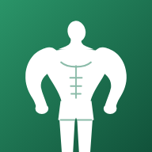

Privacy policy
GG Gains · last updated 25 October 2026
GG Gains is a calorie, macro and habit tracker where you compete with friends. This page explains what data the app keeps, why, who can see it, and your rights. We don't sell your data and the app has no adverts or ad trackers.
Who is responsible
GG Gains is run by an independent developer in the United Kingdom, who is the data controller under UK GDPR. Contact: moatassime1310@gmail.com.
What we collect
- Account: your email address and password (stored scrambled by our sign-in provider), or the basic profile Apple, Google, X or Facebook shares if you sign in with them (name and email; with Sign in with Apple you can hide your email).
- Profile: your display name, username, country flag, profile picture (a small image you choose), profile colour, goal, goal weight and ranking stats.
- What you log: foods and drinks, amounts, workouts and lifts (exercises, weights, sets and reps), weigh-ins, your targets and settings, saved recipes and favourite meals.
- Body details for the calculations: sex, age, height, weight and activity level, used only to work out your calorie and nutrient targets.
- Garmin data (optional): if you connect a Garmin watch, its daily summaries (steps, calories, sleep, heart rate, workouts). Your Garmin key is stored encrypted and is only used to fetch your own data.
- Apple Health data (optional, iPhone app): if you connect Apple Health, the app reads your daily step count, walking and running distance and active calories. Only daily totals are saved to your account, to show in your diary and count towards your step goal. Apple Health data is never used for advertising or marketing, never sold, and never shared with anyone except friends, and only if you turn on "Steps, sleep & heart rate" in Settings › Privacy & sharing (it's off unless you choose it). The app never writes to Apple Health. You can turn this off at any time in the app or in iPhone Settings › Health.
- Safety reports: if you report or block someone, we keep the report (who, why, and any details you add) so we can review it.
- Social: your friends list, friend requests, reactions you send and receive, and in-app notifications.
Progress photos are not collected. Photos you take in the app stay only on your own device and are never uploaded. Transformation videos are made on your device too.
Why we use it
- To run the app: save your diary, sync it between your devices, and calculate your targets, scores and rankings (legal basis: providing the service you asked for).
- To show your progress to the friends you add (the same basis; you choose who your friends are).
- Health-related information (food, weight, body details) is used only because you choose to enter it for these purposes (explicit consent). You can delete it at any time.
Who can see your data
- Your friends: people you accept as friends can see your profile and your ranking stats. What else they see is up to you in Settings › Privacy & sharing: your food diary and workouts, your weight, and your steps, sleep and heart rate can each be shared or hidden. Steps, sleep and heart rate are hidden unless you turn them on. Friends are told in the app when you log food. You can remove a friend at any time.
- Other users: anyone signed in can find you by typing at least the first three letters of your username or name, and see your name, username, flag and profile picture so they can send a friend request. People you block can't find you. Nothing else is shown to people who aren't your friends.
- Service providers who process data for us: Supabase (database, sign-in and server functions), GitHub Pages (hosts the app's files), and, only if you use them, Google, X or Facebook (sign-in) and Garmin (watch data). Barcodes you scan and foods you search are sent to Open Food Facts to look up products; these searches aren't linked to your account.
We never sell your data or share it for advertising.
How long we keep it
We keep your data while you have an account. Automatic backups are made weekly and the last 8 are kept, so a backup is deleted within about 2 months. If you ask us to delete your account, we delete your account and data, and it falls out of backups within that time.
Your rights
Under UK GDPR you can ask to see, correct, download or delete your data, object to how it's used, or withdraw consent. Email moatassime1310@gmail.com and we'll reply within one month. You can also complain to the UK Information Commissioner's Office (ico.org.uk).
Deleting your account
To delete your GG Gains account and all its data, including if you signed in with Facebook, Google or X, email moatassime1310@gmail.com from the email address on your account, with the subject “Delete my GG Gains account”. We'll confirm when it's done. Progress photos are on your device only: delete them in the app or by removing the app.
Security
Data is sent over encrypted connections. Each person's data is protected by database rules so only you and your accepted friends can read it, and wearable keys are stored encrypted.
Children
GG Gains is not meant for anyone under 16 and we don't knowingly collect their data.
Changes
If this policy changes in an important way, we'll tell you in the app.